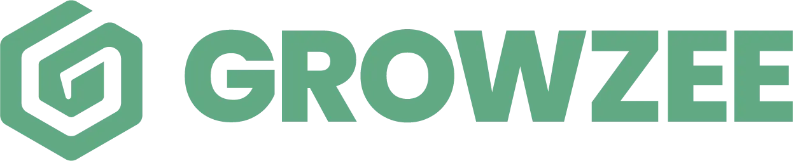
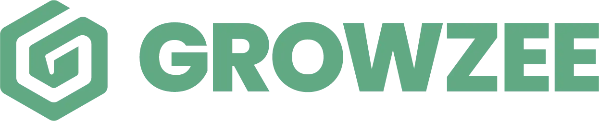
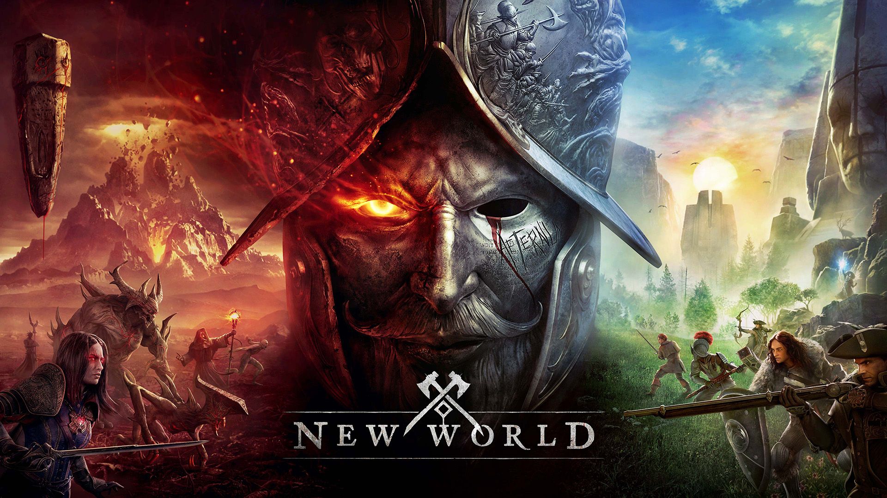
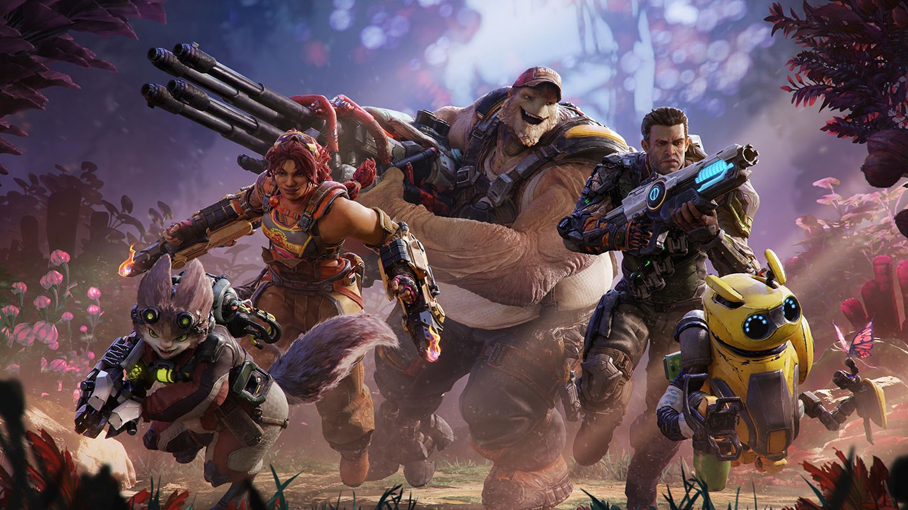
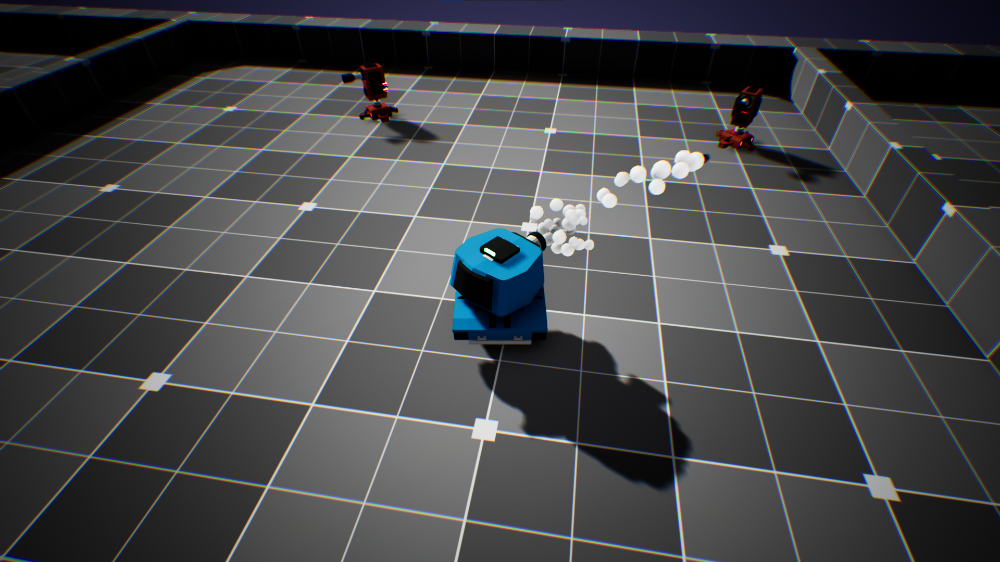
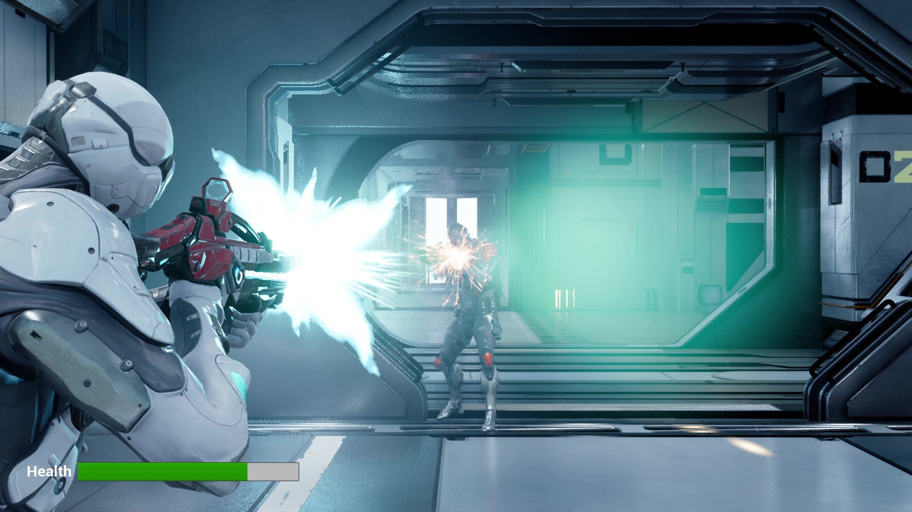
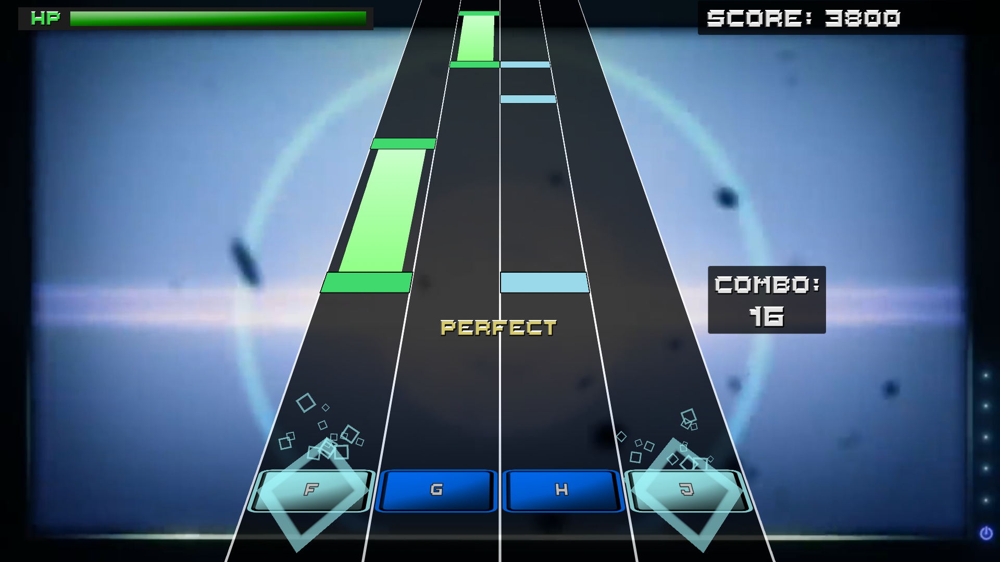

About myself
Hello, my name is Luca Palermo, i was born in Italy in 1998.
My biggest passion are videogames, and my biggest dream is to become a game developer.
I started studying programming in high school,
after which i completed TheSign academy to specialize in game dev.
Since then, I've been working as a full-time programmer.
 

The main project I did working for Instal was a Unity SDK called Growzee,
which enables game developers to monetize their game with non intrusive 3D in-game banners,
that don't interrupt the gameplay.
It uses a web browser with a custom rendering
system to show ads. It's made to be controllable via server, with the Javascript being executed
on the page being able to communicate with the SDK with a reflection system and vice-versa.
The programming languages I used on this project are C# as the main language, Java for Android, Objective-C
for iOS, and C++ to use OpenGL, Vulkan, and Metal for the rendering system.
A very interesting medical application. It uses Augmented Reality and Computer Vision to help male patients
track certain diseases, as well as general health.
I developed this app for a subsidiary company called Balzo.
The app is available for both iOS and Android on their respective stores.
This is an android application that rewards the user for playing games with special coins,
usable to redeem real life rewards and gift cards.
This was a somewhat old project that I helped reinstate.
It's available on the Google Play Store, and on its own website.

For LionBridge, I had the opportunity to test New World, by Amazon Games.
The game is a fantasy open world, and it was released a few years ago.
I helped with stress testing the servers and trying out some features of the game.

Crucible was another game that i playtested for LionBridge, developed by Amazon Games.
The game was an online third person shooter battle royale, but was sadly
canceled shortly after its release.
I helped with stress testing the servers.

A simple top-down shooter game made in Unreal Engine with C++. The player controls a tank and must destroy all turrets to advance.
DOWNLOAD PASSWORD: unreal

A third person shooter game made in Unreal Engine with C++. The player controls a character that must defeat all enemies to win.
DOWNLOAD PASSWORD: unreal

A top-down strategy game that was made in 2 years at TheSign, I made the isometric custom rendering system, book UI for the main menu, map system, game logic and more.

A japanese-style rhythm game that I made completely on my own in around a month and a half, for my final exam at TheSign. It's a rhythm game based on some japanese games that i like.
DOWNLOAD PASSWORD: unity

A multiplayer party game that was made in 2 years at TheSign, I joined the last year to help with the main UI system.
The game is available for free on steam.

This game was made at a gamejam in three days using Unity. I didn't have much experience yet, but it turned out pretty well in the end.

I worked on this game for three days at my first gamejam, while learning to use gamemaker for the first time. This was my first ever completed game, and i was very proud of it at the time.

This was a game i worked on the first year at TheSign, while learning how to use Unity for the first time. You control a shepherd that has to move some sheeps in a specific area.
Technically I don't own this game, so i can't give a link to the project. If you want more information, feel free to contact me.

This is a dialogue system for unity made in collaboration with another programmer at TheSign.
It's very simple to use and easy to customize

I made a system where it is possible to use the twitch chat to control a game in unity.
I made this for an exam at TheSign.
Feel free to contact me if you want more details.

There was a small period of time where ChatGPT was banned in Italy, so I developed my own way of using it.
It uses Telegram and ChatGPT
API to conveniently talk to the AI in a chat. As of right now, the program doesn't have much use since ChatGPT has been made available again in Italy,
but it can still be used to customize your AI's system message to give lots of different behaviours, and have a lot of fun.

This is a demo showcasing Npcs that talk like real humans. You can even have conversations with them.
It was done using Unity and OpenAI's artificial intelligence, many years before chatgpt was a thing, and uses DaVinci as model.